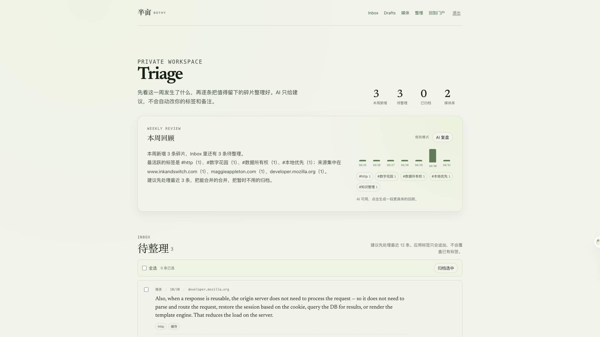

Save less.
Return more.
Capture a quote, a link, a screenshot. Then decide what deserves to stay.
Bothy / 半亩 · private knowledge portal
“A reading ritual should leave room for returning.”
From a browser selection
“Local-first software: you own your data, in spite of the cloud.”
Saved with its source
A calendar, a sketch, a page worth keeping.
Content-addressed media

From anywhere
you read.
A quote from the browser. A link from a tab. An image from a folder. They all land in one private inbox.
Chrome · Obsidian · uTools
AI suggests.
You decide.
A summary, a few tags, a possible duplicate. Apply what helps; ignore the rest. Nothing is rewritten behind your back.
summary · tags · duplicatesSome things
shouldn't stay.
Delete is not a database operation. It is a small ceremony: the paper curls, the embers lift, and the inbox gets lighter.
REMOVE · WITH A LITTLE CEREMONY“It harkens back to the early days of the web when people had fewer notions of how websites ‘should be.’”

A fragment
becomes a draft.
Keep the source, edit the Markdown, export the file. The loop closes in something you can actually use.
Markdown · citations · export